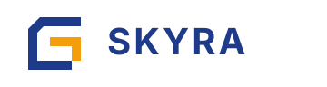

Direction 01
Circuit
A routed geometric S with a gold center bridge. This is the most explicit letterform and the closest fit if you want the mark to read like a technical operator logo.
Three tighter directions with one core idea each. All three are favicon-first and split into a standalone mark, a lockup, and a compact icon so you can judge them on shape instead of pitch language.
Direction 01
A routed geometric S with a gold center bridge. This is the most explicit letterform and the closest fit if you want the mark to read like a technical operator logo.
Direction 02
A lifted horizon with a hard beacon star. This is the clearest sky-facing direction and the least “AI crypto” of the three while still staying geometric.
Direction 03
A square spiral with a gold inner return. This is the most architectural direction and maps cleanly onto the project language of episodes, frames, and bounded memory.
